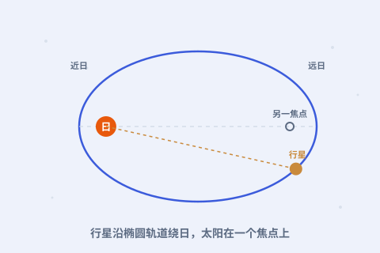

他用了八年算火星，终于承认：行星走的不是正圆，是椭圆。三条定律，把哥白尼的草图变成了精确蓝图。
点任意一张卡片，进入图文详解；看不懂的词，随时点开弹窗。

行星走椭圆、近太阳快、周期平方正比于距离立方——三句话写尽天体运动。
八年算一颗火星，让他承认：圆不通，椭圆才通。
他弄清了眼睛如何成像，也帮望远镜说清了原理。
一张表，把上千颗星的位置算到前所未有的准。
约翰内斯·开普勒（1571—1630），德国人。他体弱、视力不好，却有一双能看穿数字的眼睛。
他先做教士、后当老师，一边教数学一边琢磨星空。命运让他继承了第谷留下的、当时最精确的观测数据——这是他一生最大的运气。
他一生穷困、颠沛，却在草稿纸上一遍遍逼近真理：行星沿椭圆运行，且离太阳越近跑得越快。
看完整时间轴 →
面向中学生的科普小站：按时间顺序讲故事，把难词讲成人话。每个核心概念都能点开弹窗看通俗解释；想深入就读“详解页”；想动手就玩“实验”；不确定哪个词什么意思，去词典里搜。